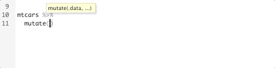
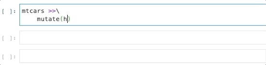

Siuba is an amazing port of dplyr to the python ecosystem. Like dplyr, siuba defines an domain specific querying language: you can use it query pandas data frames, as well as SQL and Spark data sources.
One killer feature of dplyr is the tab-completion of columns provided in RStudio.

It would be really cool if this worked in siuba, and now it does!

Simply import the following in a Jupyter Notebook to get started.
import siuba.experimental.completerI worked on a small PR with Michael Chow (Github, Twitter), the creator of Siuba to make this a reality!
I’m excited to share what I learned about IPython and Siuba in the progress. For a more technical overview, check out Michael’s architecture decision record.
How does RStudio tab-complete work?
The RStudio tab-completer is context aware:
it knows that the cursor is in a %>% pipe chain, and that the mtcars
data frame is the input.
It then inspects the mtcars data frame for column names
and suggests them during tab-completion.
We took a similar approach with Siuba.
We need a way to inspect Python objects and find relevant context.
The secret ingredient here is IPython: not only does IPython power (python) Jupyter notebooks, but everything in IPython is also a Python object.
This means we can search, inspect, find, and modify everything in the notebook programmatically!
First, we want find all data frames defined in the environment.
There a couple different ways to do this, but IPython has a built-in shortcut using magics.
IPython.get_ipython().run_line_magic("who_ls", "DataFrame")After finding candidate data frames, we want find the data frame in the most relevant context. At the moment, that’s defined to be the data frame referenced in the most recent input. IPython keeps a log of all inputs and outputs to search through.
I think there’s a lot of room for improvement. RStudio definitely has a more sophisticated method, because it doesn’t rely on previously executed code.
But it works surprisingly well, and once you know the quirk you can easily fire off a new input with the data frame you want to complete to get it working again.
This is my favorite part. Know that you can think of _ as a placeholder
for the actual data frame (see Appendix Siuba for more details).
Well, we literally put the data frame object into the placeholder.
Effectively, IPython runs tab-completion on df.<TAB>!
The trick is four lines of code inserted
into the Jedi
completer method IPython uses. IPython kinda encourages this behavior
with hooks,
extensions,
and start-up scripts
but in this case we had to be a little more invasive.
This method also has a side benefit of working really well with pandas Series methods,
so completions like _.hp.<TAB> also provide suggestions.
One major syntactical difference between Siuba and dplyr is how columns are referenced.
In dplyr, we just write the name of the column:
hpdplyr calls this a data-variable, but it might also be referred to as the bare name or the unquoted name.
With Siuba we need to use _. as a prefix to the column name.
_.hp_ can be thought of as the .data pronoun
from dplyr. For example, you can also write the dplyr expression like this:
mtcars %>%
mutate(hp = .data$hp - mean(.data$hp))which is very similar to how I wrote the expression in Siuba:
_ stands in for the actual name of the data frame,
and . is used for column names and attributes.
hp?Why can’t we just use hp like in R? There’s a couple reasons.
Python doesn’t have the tools built-in to make this easy.
By default, Python would try to search for the value of hp in the environment,
rather than the data. And once it couldn’t find it, it would throw an
error.
It also goes against Python convention and intuition. When working with languages, you have expectations for how things should work, and communication is easier if you follow those expectations. In R this kind of stuff is normal, but in Python it would be quite surprising.
In fact, if you really want to, you can almost make this work: Wes McKinney, the creator pandas, did an experiment in 2011 showing how something like this could be possible in Python. But he also concluded that this didn’t really fit into the Python philosophy.
Normal tab-completion in Python isn’t very magical.
All attributes and methods that don’t start with an underscore are
suggested. The names of these attributes and methods are easily found
with the built-in function dir.
Customization can be added by defining a method named
__dir__
in the object.
This is the simplest way IPython
and finds completion suggestions.
For example, pandas provides tab-completion
for data frame columns by defining the the custom __dir__ method
siuba’s needs are more complicated. There’s no data frame information stored
within the data pronoun _. We need to search the surrounding context
for a suitable data frame and that requires IPython.